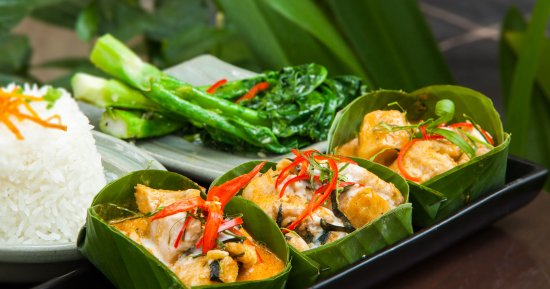
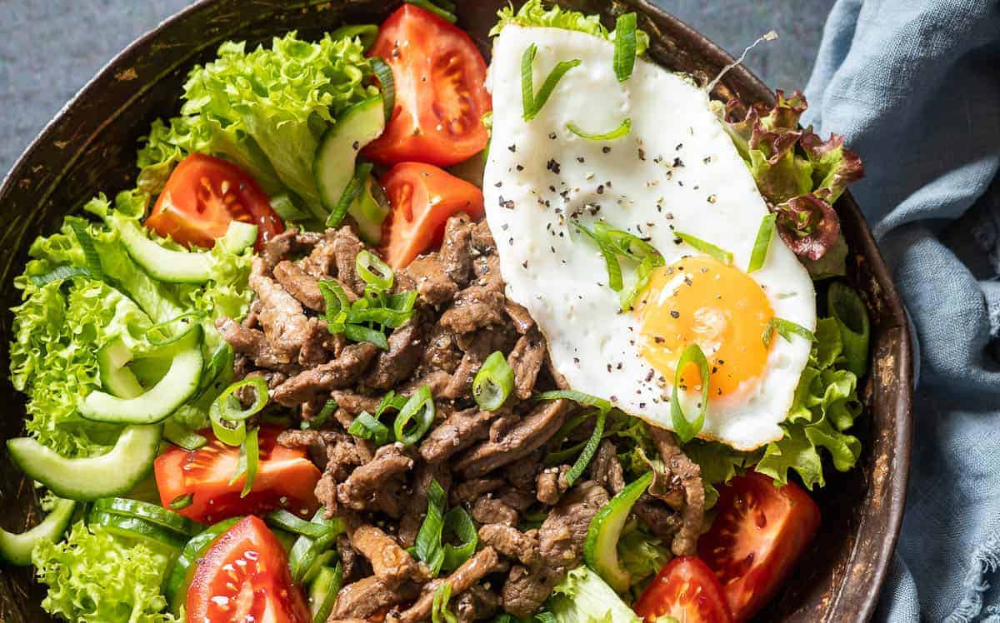

Traditional Cambodian Dishes
Cambodian food is known for using fresh herbs, rice, vegetables, and fish. Many meals are shared with family around the table, and food is an important part of celebrations.
Examples of Popular Dishes
Amok
Amok is a creamy curry made with fish, coconut milk, and spices, often steamed in banana leaves.

Lok Lak
Lok lak is a stir-fried beef dish usually served with rice, vegetables, and a pepper-lime dipping sauce.

Other Everyday Foods
Rice, noodles, soups, and grilled meats are common in daily meals, and street food is popular in many cities.